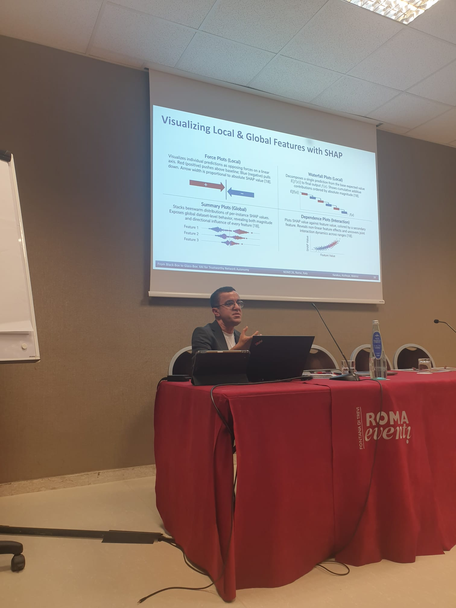
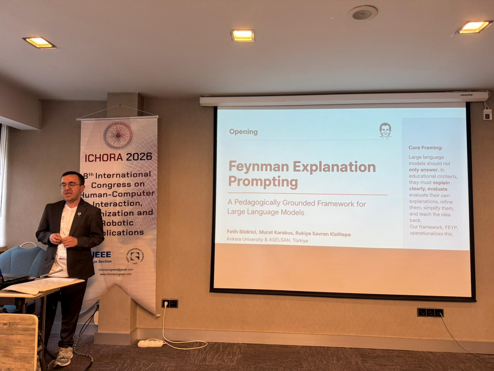
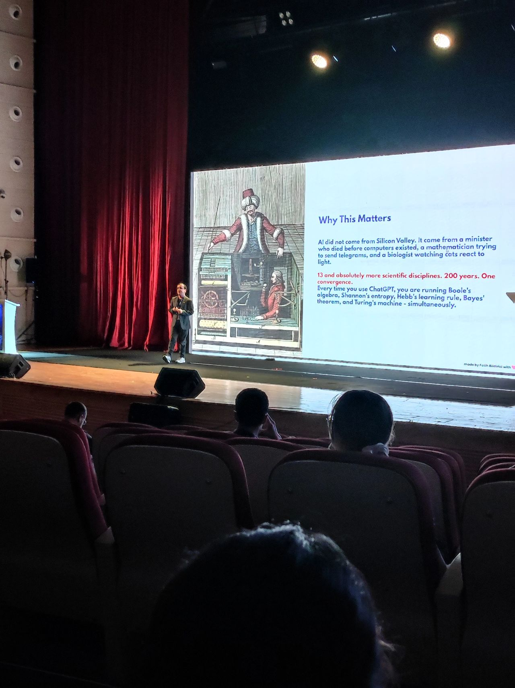
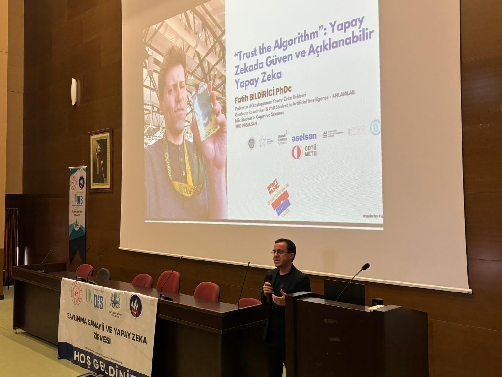
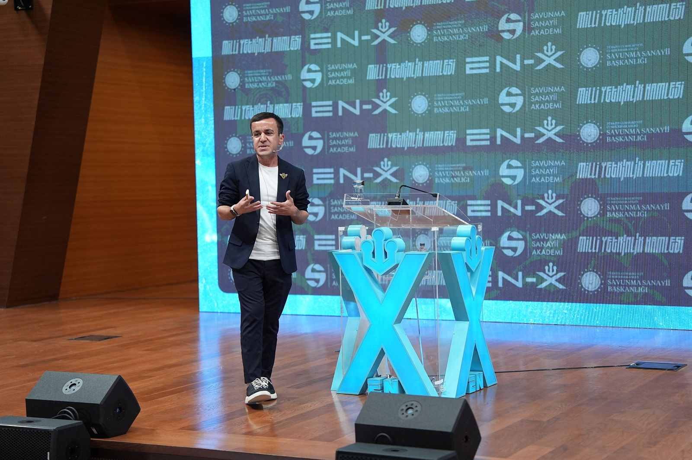

Açıklanabilir Yapay Zeka
Yapay zekanın kararlarını insanlara nasıl açıklayabiliriz? SHAP, LIME, güven ve yorumlanabilirlik pratikleri.
45–60 dk · Teknik / yarı teknik · Keynote / workshopAI Speaker · XAI Researcher · Podcast Host
Konferanslar, kurumsal etkinlikler, üniversite buluşmaları ve teknik workshoplar için XAI, üretken AI, AI okuryazarlığı ve sorumlu AI başlıklarında konuşmalar yapıyorum.

Konuşma Başlıkları
Yapay zekanın kararlarını insanlara nasıl açıklayabiliriz? SHAP, LIME, güven ve yorumlanabilirlik pratikleri.
45–60 dk · Teknik / yarı teknik · Keynote / workshopLLM'lerin çalışma mantığı, sınırları, kurumsal kullanım senaryoları ve doğru beklenti yönetimi.
45–90 dk · Yönetici / teknik ekip · SeminerYapay zeka çağında kritik beceriler, yeni çalışma biçimleri ve ekiplerin öğrenme yolculuğu.
45–60 dk · Genel kitle · KeynoteTaraflılık, şeffaflık, gizlilik, insan denetimi ve sorumlu AI geliştirme prensipleri.
60–120 dk · Kurumsal ekipler · WorkshopŞirketler yapay zekayı nereden başlatmalı? Use-case seçimi, önceliklendirme ve risk yönetimi.
60–90 dk · Yönetici ekipler · Strateji oturumuAkademik araştırma, bilişsel bilimler ve insan-AI etkileşimi perspektifiyle yapay zeka sistemleri.
45–60 dk · Akademik kitle · KonferansGörsel Arşiv

ICHORA 2026 · Ankara

TOFA Gelişim Zirvesi

Savunma Sanayii ve Yapay Zeka

EN-X Engineering X
Format ve Hazırlık
Keynote, panel, workshop veya kurum içi oturumlar için içerik; teknik derinlik, kitle profili ve etkinlik hedefiyle birlikte uyarlanır.
Etkinlik tarihi, kitle profili, şehir/online bilgisi ve beklenen süreyi paylaşmanız yeterli.
Davet Formunu Aç